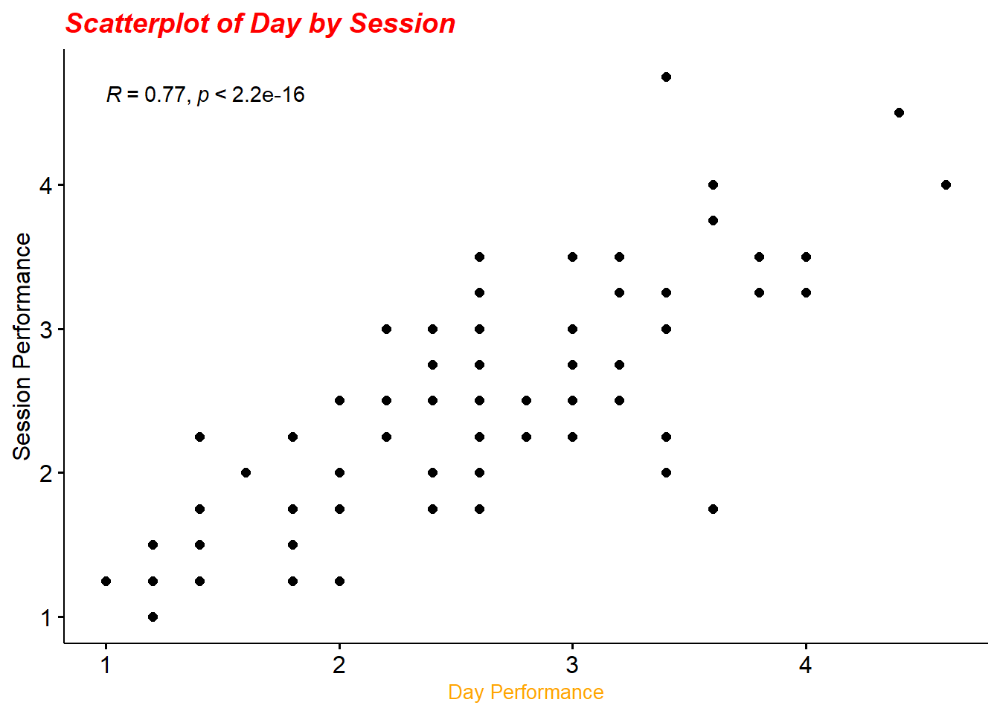
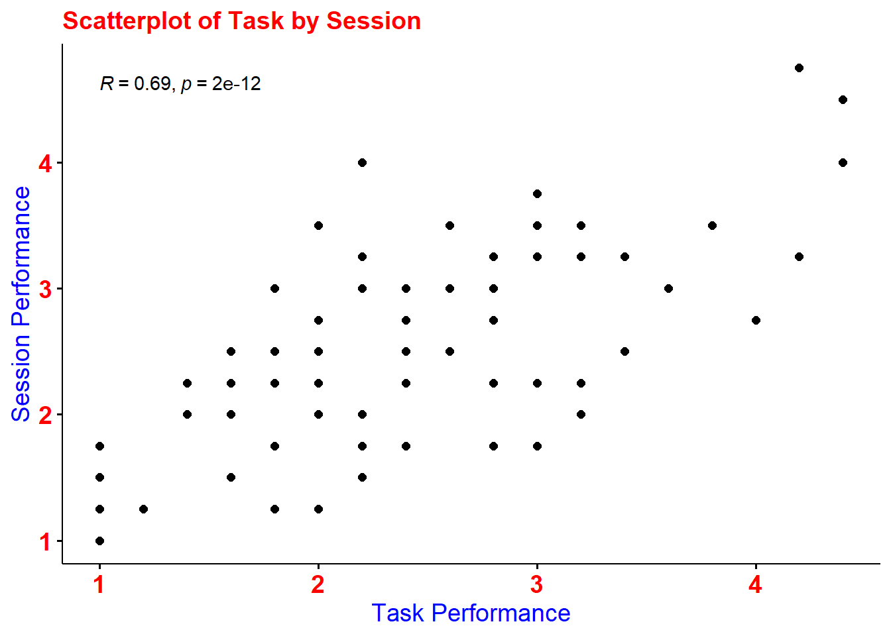

10 Lab Session 7
10.1 Learning Objectives
In this week’s session we will be focusing on some “guess work”. You will be given a partial script and some graphs. Your task will be to complete the code in order to produce the end-graphs on your own.
10.2 To start with. (You need to do the following steps before coming to the lab)
First, start RStudio and create a new project. Your project should be named “Week 9 lab”
Go on moodle in week 9 in the lab session and download two files.
1. “week9data.csv”
2. “week9script.R”
Make sure you save both files in the folder you just created for your new project.
Once you have that then load the R script and execute only the first 6 lines.
In order to load the script go to File > Open File then select the “week9script.R” file and click on Open. If you can see the dataframe df9 in your environment then you are all set to do the rest of the work in the lab.
10.3 Lab task. The following tasks have to be completed in the lab
10.3.1 Part 1: Histograms
Go through your scripts now and try to complete the missing code in order to get the following graphs:


10.3.2 Part 2: Scatterplots
Now continue to the scatterplots

